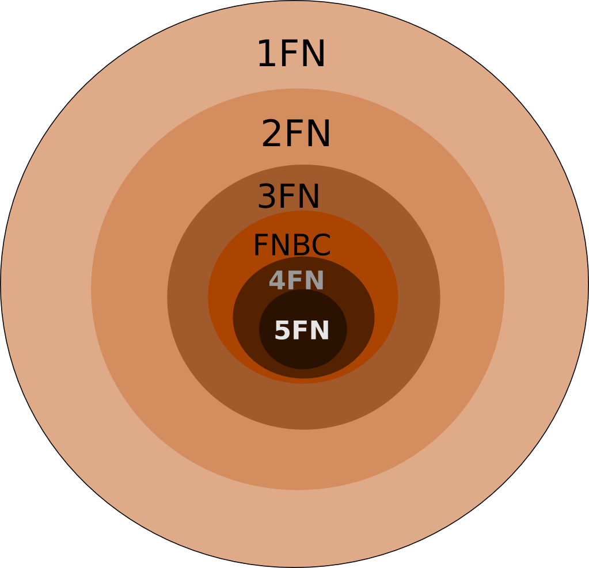
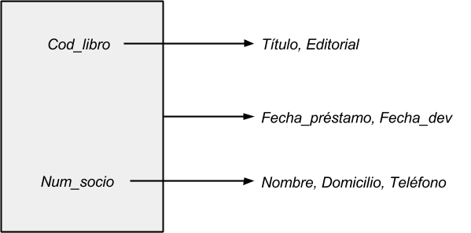
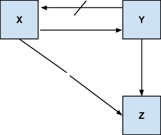

Introducción
La teoría de normalización ofrece un conjunto de reglas que nos permiten asegurar que un esquema relacional cumple con unas ciertas propiedades.
Cuando una base de datos no ha sido diseñada adecuadamente, pueden surgir problemas conceptuales y operativos en el funcionamiento de la base.
Algunos de los problemas que puede presentar un esquema relacional cuando el diseño es inadecuado son los siguientes:
-
Incapacidad para almacenar ciertos hechos.
-
Redundancias y posibles inconsistencias.
-
Ambigüedades.
-
Pérdida de información (aparición de tuplas espurias).
-
Pérdida de ciertas restricciones de integridad que dan lugar a interdependencias entre los datos (dependencias funcionales).
-
Aparición en la base de datos (como consecuencia de las redundancias) de estados que no son válidos en el mundo real; lo que
se llama anomalías de inserción, borrado o modificación.
El esquema relacional debe ser analizado para comprobar que no presenta los problemas anteriormente citados, evitando así la pérdida de información
y la aparición de inconsistencias.
Veamos un ejemplo de estos problemas derivados de un diseño inadecuado. En la figura se muestra la relación ESCRIBE que almacena datos sobre
LIBRO (Cod_libro, Título, Editorial, Año) y sobre AUTOR (Autor, Nacionalidad) que los han escrito. Si observamos esta relación, vemos
que presenta varios de los problemas enumerados anteriormente.
LIBRO (Cod_libro, Título, Editorial, Año)
AUTOR (Autor, Nacionalidad)
ESCRIBE
| AUTOR |
NACIONALIDAD |
COD_LIBRO |
TÍTULO |
EDITORIAL |
AÑO |
| Date, C. |
Norteamericana |
23433 |
Databases |
Addison-W. |
1990 |
| Date, C. |
Norteamericana |
54654 |
SQL Standard |
Addison-W. |
1986 |
| Date, C. |
Norteamericana |
53235 |
Guide to Ingres |
Addison-W. |
1988 |
| Codd, E. |
Norteamericana |
97875 |
Relational M. |
Addison-W. |
1990 |
| Gardarin |
Francesa |
34245 |
Base de Datos |
Parainfo |
1986 |
| Gardarin |
Francesa |
55366 |
Comparación BD |
Eyrolles |
1984 |
| Valdurez |
Francesa |
86754 |
Comparación BD |
Eyrolles |
1984 |
| Kim, W. |
Norteamericana |
32176 |
OO Databases |
ACM Press |
1989 |
| Lochovsky |
Canadiense |
23456 |
OO Databases |
ACM Press |
1989 |
Tabla 5.1. Ejemplo de un diseño inadecuado
Los principales problemas de esta relación se derivan de la gran cantidad de redundancia que presenta. Por ejemplo, la nacionalidad del autor se repite
por cada libro que ha escrito; y algo analógico sucede con la editorial y el año de la publicación, cuando un libro tiene más de un autor. Esta redundancia
produce a su vez:
-
Anomalías de inserción: dar de alta un libro obliga a insertar en la base de datos tantas tuplas como autores tenga el libro.
-
Anomalías de modificación: cambiar la editorial de un libro obliga a modificar todas las tuplas que corresponden al libro.
-
Anomalías de borrado: el borrado de un libro obliga a borrar varias tuplas, tantas como autores tenga ese libro y viceversa. El borrado de un autor
nos lleva a borrar tantas tuplas como libros haya escrito este autor.
Vemos que la actualización (alta, baja o modificación) de un solo libro o de un solo autor nos puede obligar a actualizar más de una tupla, dejándose la integridad
de la base de datos en manos del usuario. Al riesgo de la posible pérdida de integridad hay que añadir la ineficiencia asociada a estas múltiples actualizaciones.
Además de estas anomalías de inserción, borrado y modificación, existen otros problemas adicionales como la imposibilidad de almacenar ciertos hechos o la desaparición
de información que desearíamos mantener en la base de datos. Por ejemplo, si se quisiera incluir información sobre un autor del que no existiera ningún libro en la base
de datos, no sería posible ya que el atributo cod_libro forma parte de la clave primaria de la relación; ni tampoco podríamos introducir obras anónimas. Por otro lado,
al dar de baja un libro se pierden también los datos de los autores y viceversa, si borramos un autor desaparecen de la base de datos los libros escritos por él.
"Hechos distintos se deben almacenar en objetos distintos"
La teoría de normalización evita las redundancias y las anomalías de actualización, obteniendo relaciones más estructuradas que no presenten los problemas comentados
anteriormente.
Para solucionar los problemas del ejemplo anterior se puede optar por este diseño de esquema relacional:
LIBRO (Cod_libro, Título, Editorial, Año)
AUTOR (Nombre, Nacionalidad)
ESCRIBE (Cod_libro, Nombre)
Noción intuitiva de las formas normales
La teoría de la normalización se centra en lo que se conoce como formas normales. Se dice que un esquema de relación está en una determinada forma normal si satisface
un conjunto específico de restricciones.
La primera forma normal 1FN fue introducida por Codd, es una restricción inherente al modelo relacional por lo que su cumplimiento es obligatorio. Consiste en la
prohibición de que en una relación existan grupos repetidos, es decir, de que un atributo puede tomar más de un valor del dominio subyacente. En realidad se debe
decir que una tabla está normalizada sólo con que se encuentra en 1FN, aunque a menudo esta expresión no se aplica con la debida precisión y se afirma que una tabla
no está normalizada porque no está en formas normales a la primera.
Codd, también definió la segunda forma normal 2FN y la tercera forma normal 3FN. Posteriormente, otros autores propusieron nuevas formas normales como la Forma Normal
de Boyce y Codd FNBC, y la cuarta y quinta forma normal 4FN y 5FN debidas a Fagin.
En la figura se muestra que de todo el universo de las relaciones en 1FN, sólo algunas se encuentran en 2FN, y de ellas solo algunas se encuentran en 3FN y así
sucesivamente; es decir, la 2FN impone más restricciones que 1FN, la 3FN más restricciones que 2FN y así sucesivamente siendo la 5FN la que impone más restricciones
más fuertes.

Figura 5.1. Universo de las Formas Normales
La teoría de la normalización se basa en ciertas restricciones definidas sobre los atributos de una relación, las cuales son conocidas con el nombre de dependencias.
Existen varios tipos de dependencias, encontrándose relacionadas las 2a, 3a y FNBC con las dependencias funcionales, la 4a con las dependencias multivaluadas y la
5a con las dependencias de proyección-combinación.
Podemos decir que un esquema de relación se encuentra en 2FN si, además de estar en 1FN, todos los atributos que no forman parte de ninguna clave candidata suministran
información acerca de la clave completa, no de una parte de la clave.
Ésta es la causa por la cual la relación ESCRIBE de la figura 5.1 presenta tantas anomalías, y es también el origen de los mismos problemas en la relación
PRÉSTAMO del siguiente ejemplo:
PRESTAMO (Num_socio, DNI_socio, Cod_libro, Fecha_prestamo, Editorial, País)
donde las claves candidatas son:
(Num_socio, Cod_libro)
(DNI_socio, Cod_libro)
Se puede observar que ciertos atributos que no forman parte de ninguna clave candidata, como Editorial, nos dan información acerca del libro pero
no tienen nada que ver con el socio, por lo que no constituyen una información acerca de la clave completa sino únicamente de una parte de la clave, luego la
relación PRÉSTAMO no se encuentra en 2FN.
La solución es descomponerla en dos:
PRÉSTAMO1 (Num_socio, DNI_socio, Cod_libro, Fecha_préstamo)
LIBROS (Cod_libro, Editorial, País)
en el primer esquema existen dos claves (Num_socio, Cod_libro y DNI_socio, Cod_libro), y el único atributo (Fecha_préstamo) que no forma
parte de ninguna clave suministra información acerca de la totalidad de ambas claves candidatas; por otra parte, en LIBROS la clave es Cod_libro,
y los dos atributos que no son clave también suministran información acerca de la clave completa, ya que en este caso es simple. Por lo tanto, ambas relaciones se
encuentran en 2FN.
De lo que acabamos de exponer se deduce que toda la relación cuya clave está formada por un único atributo está, al menos en 2FN.
Una relación se encuentra en 3FN si además de las dos restricciones anteriores (1FN y 2FN), se cumple que los atributos que no forman parte de ninguna clave candidata
facilitan información sólo acerca de la(s) clave(s) y no acerca de otros atributos.
Así, por ejemplo, en PRESTAMO1 el atributo Fecha_préstamo sólo facilita información acerca de las claves, ya que no existe ningún otro atributo
no clave, por lo que dicha relación está en 3FN. Sin embargo, en la relación LIBROS el atributo País facilita información acerca de la Editorial,
no encontrándose por tanto en 3FN.
Para resolver los problemas (redundancias, inconsistencias, etc.) que presenta esta relación, conviene descomponerla en:
LIBROS1 (Cod_libro, Editorial)
EDITORIALES (Editorial, País)
que están en 3FN, ya que todo atributo no clave sólo facilita información acerca de la clave.
En resumen, para que una relación se encuentre en 3FN, ha de estar en 1FN y además todos sus atributos que no forman parte de ninguna clave candidata "deben ser
información referida a la clave, la clave completa y nada más que la clave".
Al descomponer la relación inicial (que no estaba en 2FN) en tres relaciones que están en 3FN, hemos evitado muchas de las anomalías anteriormente expuestas.
Dependencias Funcionales
La teoría de la normalización se basa en el concepto de dependencias, hasta el punto de que se le conoce como teoría de las dependencias.
Las dependencias son propiedades inherentes al contenido semántico de los datos que se han de cumplir para cualquier extensión del esquema de relación y forman
parte de las restricciones de usuario del modelo relacional.
Las dependencias nos muestran algunas importantes interrelaciones existentes entre los atributos del mundo real, cuya semántica tratamos de incorporar a nuestra
base de datos, por lo que son invariantes en el tiempo siempre que no cambie el mundo real del cual proceden.
Las dependencias funcionales son un tipo especial de dependencias que es el más extendido en la práctica, en el cual se basan las primeras formas normales.
Sea el esquema de relación R definido sobre el conjunto de atributos A y sean X y Y subconjuntos de A
llamados descriptores. Se dice que Y depende funcionalmente de X, o lo que es igual, que X determina o implica a Y si y sólo
si cada valor de X tiene asociado en todo momento un único valor de Y. Representamos esta dependencia de la siguiente forma:
X ➝ Y
Llamamos determinante o implicante al descriptor que se encuentra a la izquierda del símbolo de implicación, e implicando al descriptor
que se encuentra a la derecha.
Sea por ejemplo la relación:
LIBRO (Cod_libro, Título, Idioma, ...)
podemos decir que el código de un libro determina el título del mismo:
Cod_libro ➝ Título
En el ejemplo Cod_libro es el implicante (o determinante) en la anterior dependencia y Título es el implicado. Esta dependencia también
nos dice que el título es una información acerca del libro, ya que una dependencia funcional se puede interpretar diciendo que el implicado es un hecho (en
realidad una información) acerca del implicante.
Una herramienta muy útil para describir las dependencias funcionales es el grafo o diagrama de dependencias funcionales, mediante el cual se
representa un conjunto de atributos y las dependencias funcionales existentes entre ellos. En el grafo aparecen los nombres de los atributos unidos por flechas,
las cuales indican las dependencias funcionales y parten del implicante hacia el implicado. Cuando el implicante de una dependencia no es único atributo, es decir,
se trata de un implicante compuesto, los atributos que lo componen se encierran en un recuadro y la flecha parte de éste, no de cada atributo.
La figura 5.2 es un ejemplo de cómo se visualizan las dependencias. Podemos observar que Cod_libro determina funcionalmente el Título
del libro y la Editorial. Num_socio determina Nombre, Domicilio y Teléfono del socio. Ambos atributos en
conjunto, Cod_libro y Num_socio, determinan Fecha_prestamo y Fecha_dev, lo que se indica haciendo que la
flecha parta del recuadro que los incluye.

Figura 5.2. Ejemplo de diagrama de dependencias funcionales
Dependencia funcional plena o completa
Sea un descriptor compuesto X:
X (X1, X2)
se dice que Y tiene dependencia funcional completa o plena de X si depende funcionalmente de X pero no depende de ningún
subconjunto del mismo, esto es:
X ➝ Y
X1 ↛ Y
X2 ↛ Y
lo que se representa por:
X ⇒ Y
Supongamos que la relación:
PRESTA (Cod_libro, Título, Editorial, Num_socio, Nombre, Domicilio, Teléfono, Fecha_préstamo, Fecha_dev)
cuyas dependencias funcionales aparecen en la figura 5.2, la dependencia funcional:
Cod_libro, Num_socio ➝ Fecha_préstamo
indica que, dado un determinado código de libro y un número de socio, existe una única fecha de préstamo. Ni código de libro ni número de socio implican
por sí solos la fecha de préstamo, ya que tanto un libro se puede prestar varias fechas como un socio puede recibir libros prestados en varias fechas.
Por lo tanto la dependencia funcional anterior es completa, lo que se representa:
Cod_libro, Num_socio ⇒ Fecha_préstamo
ya que:
Código_libro ↛ Fecha_préstamo
Num_socio ↛ Fecha_préstamo
lo que intuitivamente se puede interpretar que Fecha_préstamo constituye una información sobre el conjunto de libro y socio, pero esta información
no atañe a un libro o a un socio por separado.
Por el contrario, la dependencia:
Cod_libro, Num_socio ➝ Editorial
no es plena, ya que:
Cod_libro ➝ Editorial
se dice que en esa dependencia, Num_socio es un atributo redundante o ajeno a la dependencia.
Dependencia funcional transitiva
Sea la relación
R (X, Y, Z)
en la que existen las siguientes dependencias funcionales:
X ➝ Y
Y ➝ Z
Y ↛ X
se dice entonces que Z tiene una dependencia transitiva respecto de X a través de Y, lo que se representa por:
X -- ➝ Z
Si además, Z ↛ Y, se dice que la dependencia transitiva es estricta.
En la figura 5.3 se presenta un diagrama de dependencias funcionales en el que la dependencia
X -- ➝ Z
es transitiva.

Figura 5.3. Ejemplo de dependencia funcional transitiva
Si consideramos la relación:
LIBROS (Cod_libro, Editorial, País)
en donde tenemos para cada libro su código, la editorial y el país de la editorial (suponemos que una editorial tiene su sede en un único país), se tendrán las
siguientes dependencias:
Cod_libro ➝ Editorial
Editorial ➝ País
Cod_libro ➝ País
ninguna de las dependencias Cod_libro ➝ Editorial y Título ➝ Editorial son transitivas, al ser los atributos Cod_libro
y Título equivalentes (se implican mutuamente).
Definición formal de las tres primeras formas normales
Primera Forma Normal 1FN
Para que una tabla pueda ser considerada una relación, no debe admitir grupos repetitivos (los datos deben ser planos o atómicos), esto es, debe estar en
la primera forma normal. Se dice que una relación está en 1FN si cada atributo toma un único valor del dominio subyacente.
LIBRO (Código, Título, Autor)
| Código |
Título |
Autor |
| 02154989 |
Data Models |
Tsichiritzis
Lochovsky |
| 87654353 |
A guide to DB2 |
Date |
| 65465465 |
Base de Datos |
Gardarin
Valduriez |
NO ESTÁ EN 1FN: Hay grupos repetitivos
LIBRO (Código, Título, Autor)
| Código |
Título |
Autor |
| 02154989 |
Data Models |
Tsichiritzis |
| 02154989 |
Data Models |
Lochovsky |
| 87654353 |
A guide to DB2 |
Date |
| 65465465 |
Base de Datos |
Gardarin |
| 65465465 |
Base de Datos |
Valduriez |
Tabla 5.2 Tabla con grupos repetitivos y relación en 1FN
Segunda forma Normal 2FN
Se dice que una relación está en 2FN si:
Por ejemplo, si tenemos la relación: PRESTA (Cod_libro, Num_socio, Editorial), en la que existe la siguiente dependencia funcional:
Cod_libro ➝ Editorial
y cuya clave está constituida por el descriptor Cod_libro, Num_socio, esta relación no se encuentra en 2FN al venir la editorial
determinada sólo por el código del libro y no por la clave completa.
Tercera Forma Normal 3FN
Se dice que una relación está en 3FN si:
Por ejemplo, la relación:
SOCIO (Num_socio, Ciudad, País)
que presenta las siguientes dependencias funcionales:
Num_socio ➝ Ciudad
Ciudad ➝ País
y cuya clave es evidentemente Num_socio. Dicha relación no se encuentra en 3FN al depender País transitivamente de la clave a través
de Ciudad.
En otras palabras, la 3FN consiste en establecer los requerimientos de los datos del problema, de manera que se pueda determinar cuáles atributos dependen
funcionalmente de otros atributos dentro del dominio del problema.
Descomposición de relaciones
La transformación de una relación que se encuentra en una determinada forma normal, en otra relación cuya forma normal es superior se realiza por medio del
operador proyección del álgebra relacional.
Sea por ejemplo la relación:
PRESTA (Cod_libro, Num_socio, Editorial)
que se encuentra solo en 1FN (ya que su único atributo no principal Editorial no depende totalmente de la clave). Si quisiéramos llevar esta
relación a una forma normal más avanzada, sería preciso descomponer mediante proyecciones, obteniendo varias relaciones. Así, proyectando sobre
Cod_libro, Num_socio y sobre Cod_libro, Editorial obtendremos:
PRESTA1 (Cod_libro, Num_socio)
PRESTA2 (Cod_libro, Editorial)
Ambas relaciones están en 3FN y han desaparecido las redundancias y las inconsistencias a las que antes aludimos.
Además, la combinación natural de PRESTA1 * PRESTA2 (por el atributo común Cod_libro) nos devuelve la relación original.
De manera análoga, la relación:
SOCIO (Num_socio, Ciudad, País)
que se encuentra en 2FN pero no en 3FN, podría descomponerse en dos proyecciones:
SOCIO1 (Num_socio, Ciudad)
CIUDAD (Ciudad, País)
también:
SOCIO1 * CIUDAD = SOCIO
Descomposición sin pérdida de información
Se dice que una descomposición se ha realizado sin pérdida de información cuando la combinación natural se las proyecciones resultantes nos devuelve
la relación original.
Sea la relación:
LIBRO (Cod_libro, Editorial, País)
en la cual tiene lugar las siguientes dependencias funcionales:
Cod_libro ➝ Editorial
Editorial ➝ País
LIBRO
| Cod_libro |
Editorial |
País |
| 654654 |
Ra-Ma |
España |
| 665465 |
Ra-Ma |
España |
| 876545 |
ParaInfo |
España |
| 987456 |
Anaya |
España |
| 965842 |
Addison-W. |
EEUU |
LIBRO1
| Cod_libro |
País |
| 654654 |
España |
| 665465 |
España |
| 876545 |
España |
| 987456 |
España |
| 965842 |
EEUU |
EDITORIAL1
| Cod_libro |
País |
| Ra-Ma |
España |
| Ra-Ma |
España |
| ParaInfo |
España |
| Anaya |
España |
| Addison-W. |
EEUU |
LIBRO1 * EDITORIAL1
| Cod_libro |
Editorial |
País |
| 654654 |
Ra-Ma |
España |
| 654654 |
Parainfo |
España |
| 654654 |
Parainfo |
España |
| 665465 |
Ra-Ma |
España |
| 665465 |
Parainfo |
España |
| 665465 |
Anaya |
España |
| 876545 |
Ra-Ma |
España |
| 876545 |
ParaInfo |
España |
| 876545 |
Anaya |
España |
| 987456 |
Ra-Ma |
España |
| 987456 |
ParaInfo |
España |
| 987456 |
Anaya |
España |
| 965842 |
Addison-W. |
EEUU |
Tabla 5.3 Descomposición con pérdida de información (aparición de tuplas espúrias)
Supongamos que descomponemos esta relación en:
LIBRO1 (Cod_libro, País)
EDITORIAL1 (Editorial, País)
cuyas extensiones aparecen en LIBRO de la figura 5.3. La combinación de las relaciones LIBRO1 * EDITORIAL1 da lugar a
la aparición de tuplas espurias.
En cambio con la siguiente descomposición:
LIBRO2 (Cod_libro, País)
EDITORIAL2 (Cod_libro, Editorial)
es fácil comprobar que la combinación natural:
LIBRO * EDITORIAL2
daría la relación original.
La condición necesaria y suficiente para que una descomposición se produzca sin pérdida de información es que el atributo común de las dos relaciones
sea clave al menos en una de ellas, condición que no se cumple en el primer caso.
Descomposición sin pérdida de dependencias funcionales
Las dependencias funcionales recogen la semántica del mundo real, por lo que es conveniente conservarlas en el proceso de descomposición.
Sea la misma relación LIBRO del ejemplo anterior que hemos descompuesto en LIBRO2 y EDITORIAL2, donde no ha habido pérdida de información,
dado que el atributo común Cod_libro es clave en ambas relaciones.
Sin embargo, en esta descomposición se ha perdido una dependencia funcional, ya que en la relación LIBRO2 la única dependencia funcional es:
Cod_libro ➝ País
y en la EDITORIAL2, la única dependencia es:
Cod_libro ➝ Editorial
luego la dependencia Editorial ➝ País se ha perdido, y con ella también ha desaparecido en nuestro esquema parte de la semántica del mundo real,
la cual dice que dada una editorial ésta se encuentra en un único país.
Descomposición en proyecciones independientes
La descomposición de una relación R en un conjunto de relaciones {Ri} se dice que se ha realizado en proyecciones independientes si
no ha habido pérdida de información ni de dependencias funcionales.
Si la relación LIBRO del ejemplo, la hubiésemos descompuesto en:
LIBRO3 (Cod_libro, Editorial)
EDITORIAL3 (Editorial, País)
estas dos proyecciones serían independientes, ya que el atributo común es clave de una de las relaciones (la segunda), por lo que no hay pérdida de información.
Además tampoco hay pérdida de dependencias funcionales, dado que LIBRO3 tiene la dependencia:
Cod_libro ➝ Editorial
y EDITORIAL3 tiene:
Editorial ➝ País
Ésta es la mejor descomposición, ya que las relaciones resultantes son equivalentes a la relación original, y se han eliminado las anomalías de inserción,
borrado y modificación.
A veces, el proceso de normalización se aplica a la denominada relación universal, que está constituida por el conjunto de atributos de universo del
discurso que se desea modelar y por el conjunto de dependencias funcionales.